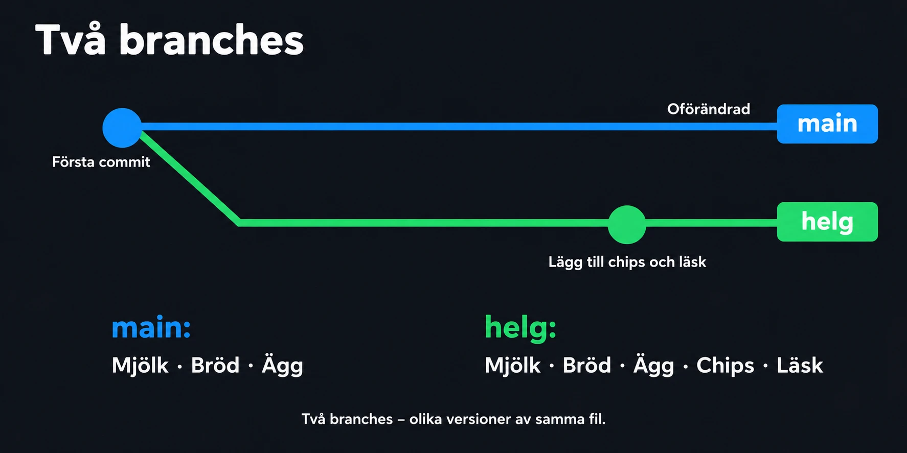

Övning – Git branching
Branches, switch och merge
Mål
Efter övningen ska du kunna:
- Förklara vad en branch är.
- Skapa en ny branch.
- Byta mellan branches.
- Göra commits på en branch utan att påverka
main. - Merga in en branch i
main. - Lösa en enkel merge-konflikt.
När du arbetar med branches ska du tänka på att varje branch är ett eget spår av commits.
main innehåller det som fungerar. En ny branch används för att prova eller bygga något nytt, utan att main påverkas.
När arbetet på branchen är klart slår du ihop den med main med en merge.
Målet är att kunna jobba på flera saker samtidigt och alltid ha en version som fungerar.
Alla uppgifter görs i terminalen med vanliga textfiler – du behöver inte skriva någon kod. Kör git status och git branch ofta för att se var du står.
Uppgift 1 – Inköpslistan
Scenario
Du har en inköpslista i en textfil. Du vill lägga till några saker till helgen, men vill inte ändra den vanliga listan förrän du är säker.

Instruktioner
Skapa ett repo med en inköpslista. Skapa därefter en branch och gör ändringen där.
Krav
Repot ska innehålla:
- En fil
inkop.txtmed tre saker, till exempel mjölk, bröd och ägg. - En första commit på
main.
Skapa därefter en branch som heter:
helg.
På branchen helg ska du:
- Lägga till två saker i
inkop.txt. - Göra en commit.
Byt tillbaka till main och öppna inkop.txt. Listan ska bara ha de tre första sakerna.
Uppgift 2 – Slå ihop listan
Scenario
Helgens saker är bestämda. Nu ska de in i den vanliga listan.
Instruktioner
Fortsätt i repot från uppgift 1. Merga in branchen helg i main.
Krav
- Du står på
mainnär du mergar. inkop.txtpåmaininnehåller alla fem sakerna.- Branchen
helgär borttagen efteråt. git branchvisar baramain.
Uppgift 3 – Två branches
Scenario
Du planerar en fest. Du vill skriva gästlistan och menyn var för sig.
Instruktioner
Skapa ett nytt repo. Skapa två branches – en för varje del – och merga in båda i main.
Krav
Repot ska innehålla:
- En fil
fest.txtmed rubriken "Fest" och en commit påmain.
Skapa följande branches:
gaster
- En ny fil
gaster.txtmed minst tre namn.
meny
- En ny fil
meny.txtmed minst två rätter.
Båda branches ska mergas in i main. Visa till sist historiken med git log --oneline --graph --all.
Uppgift 4 – Merge-konflikt
Scenario
Du och en kompis har båda ändrat tiden för festen – på samma rad. Git kan inte veta vilken tid som gäller.
Instruktioner
Skapa en konflikt med flit, och lös den.
Krav
- Filen
tid.txtpåmaininnehåller radenStart: 18.00. - På en branch
ny-tidändras raden tillStart: 19.00och commitas. - På
mainändras samma rad tillStart: 17.00och commitas. - När du mergar
ny-tidin imainska det bli en konflikt.
Lös konflikten:
- Välj en av tiderna.
- Ta bort raderna
<<<<<<<,=======och>>>>>>>. - Avsluta mergen med en commit.
Uppgift 5 – Ångra en merge
Scenario
Du har mergat och fått en konflikt – men har inte tid att lösa den just nu.
Instruktioner
Skapa en ny konflikt på samma sätt som i uppgift 4. Ångra den här gången mergen i stället för att lösa den.
Krav
- Det blir en konflikt när du mergar.
- Du ångrar mergen med
git merge --abort. git statusvisar att inget pågår: nothing to commit, working tree clean.- Filen ser ut precis som innan du mergade.
- Branchen du försökte merga finns kvar.
Uppgift 6 – Skapa ditt eget branch-flöde
Scenario
Du ska själv välja ett litet projekt med textfiler, där det finns minst två saker att jobba på var för sig.
Exempel på områden:
- Receptsamling.
- Resplan.
- Träningsschema.
- Spellista.
- Läxplanering.
- Filmtips.
Instruktioner
Skapa ett repo och arbeta med en egen branch för varje del. Fundera på vad varje branch ska heta så att namnet säger vad den gör.
Krav
Din lösning ska innehålla:
- Ett repo med minst en commit på
main. - Minst två branches med bra namn, till exempel
feature-frukost. - Minst två commits på varje branch.
- Bra commit-meddelanden.
- Alla branches mergade in i
main. - Branches som är klara ska vara borttagna.
- Historiken visad med
git log --oneline --graph --all.